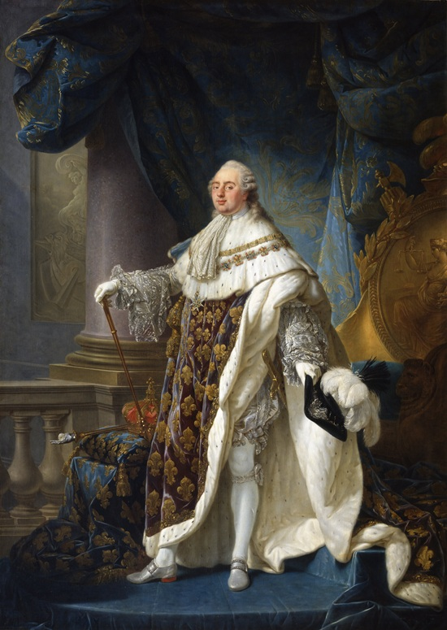
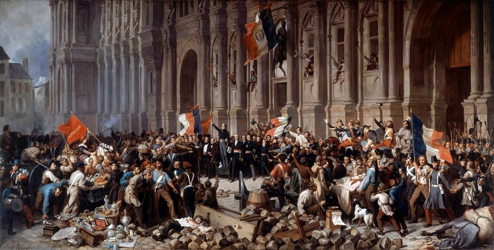
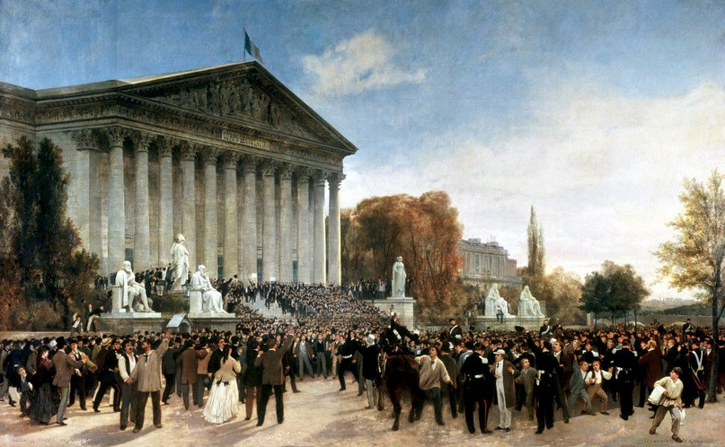

Почему во Франции случались революции?
Автор статьи: Максим Вахминцев
Опубликовано: 23 ноября 2022
Опубликовано: 23 ноября 2022
Статья в группе ВК Историческая империя: https://clck.ru/3M6QTS
1. Великая французская революция 1789-1799 гг.
Первая и самая знаменитая революция во Франции случилась, конечно же, в 1789 году. Ее причины известны достаточно хорошо: веками складывавшийся социальный порядок перестал отвечать потребностям страны. Дворянство и духовенство откровенно паразитировали за счет третьего сословия. Последнее составляло подавляющее большинство населения страны, но не имело никаких политических прав.
Людовик XVI не проводил радикальные реформы не только из-за своей нерешительности, но и опасаясь как разжечь аппетиты радикальной оппозиции, так и отвернуть от себя дворянство - главную опору королевской власти и самую влиятельную политическую силу в стране. Впрочем, авторитет короля и без того был подорван коррупцией элиты, ее чересчур роскошным образом жизни и, прямо скажем, легкомысленным поведением Марии Антуанетты. Ее подозревали в шпионаже на родную Австрию и пускали про нее самые невероятные слухи.
{kind=link}
"Штурм Бастилии", 1789 г., Жан-Батист Лаллеман.
Тогдашняя Франция имела огромное количество острых проблем:
разные регионы имели свои, очень отличающиеся друг от друга языковые диалекты и разные меры длин и весов;
налогообложение в королевской Франции не было равномерным - отдельные регионы пользовались своими налоговыми послаблениями;
существовало огромное количество старых и ненужных налогов, которые сознательно не отменялись, дабы выкачивать из третьего сословия все соки;
высшие должности покупались и продавались, как и дворянские титулы.
Кстати говоря, по той же причине т. н. «новое дворянство мантии», приобретшее свои титулы за деньги, с началом революции легко отказалось от своих привилегий. Их совесть была свободна, в отличие от тех, чьи предки веками завоевывали эти самые привилегии, порой даже восставая против самого короля. В общем, стране требовалось кардинальное обновление, на которое королевская власть была не способна.

,_revêtu_du_grand_costume_royal_en_1779_-_Google_Art_Project.jpg){kind=link}
Антуан-Франсуа Колле. Людовик XVI, король Франции и Наварры, в коронационном одеянии (1779).
Внеочередной созыв Генеральных штатов не принес никакой пользы, а лишь усугубил ситуацию. Депутаты от третьего сословия создали Национальное собрание и составили конституцию, закрепившую демократические права и свободы французов. Луи пришлось переехать из Версаля в Париж и провозгласить свою солидарность с революционерами.
Именно что пришлось: очень скоро король попытался бежать вместе с семьей из страны. Ради возвращения трона Луи оказался готов впустить во Францию прусские и австрийские войска, чем, разумеется, сделал себя предателем в глазах французов. Бывшего короля поймали на границе, вернули в Париж, судили и казнили. Франция же, провозгласив себя республикой, ввязалась в войну практически со всей Европой. Более подробно об этом мы поговорим в одном из наших следующих выпусков.
2. Июльская революция 1830 года

Именно что пришлось: очень скоро король попытался бежать вместе с семьей из страны. Ради возвращения трона Луи оказался готов впустить во Францию прусские и австрийские войска, чем, разумеется, сделал себя предателем в глазах французов. Бывшего короля поймали на границе, вернули в Париж, судили и казнили. Франция же, провозгласив себя республикой, ввязалась в войну практически со всей Европой. Более подробно об этом мы поговорим в одном из наших следующих выпусков.
2. Июльская революция 1830 года
{kind=link}
Ламартин отвергает красный флаг перед Ратушей в Париже 25 февраля 1848 года.
После отречения Наполеона к власти во Франции вернулись Бурбоны. Людовик XVIII был вынужден, под давлением Александра I, даровать Франции конституцию, но ничего, по сути, не делал для реального исполнения последней. Преемник же Луи, Карл X, даже не пытался скрывать своей ненависти к конституции. Один из самых консервативных монархов 19-го века, он считал своей целью восстановить Старый порядок, насколько то было возможно. Он даже короновался в Реймсском соборе, где до того веками короновались французские короли.
Карл не стеснялся игнорировать парламент, что провоцировало возмущение народа. Его ультраконсерватизм не соответствовал новым реалиям и запросам нового, индустриального французского общества. Опубликованные летом 1830 года «ордонансы Полиньяка», вновь ограничившие права и свободы граждан, спровоцировали уже начало революции. Массовые недовольства оказались настолько сильными, что их не смогла успокоить даже успешная кампания французских войск в Алжире. После боев 27-30 июля, когда восставшие взяли Лувр и Тюильри, депутаты провозгласили королем Франции Луи Филиппа, герцога Орлеанского.
Карл не стеснялся игнорировать парламент, что провоцировало возмущение народа. Его ультраконсерватизм не соответствовал новым реалиям и запросам нового, индустриального французского общества. Опубликованные летом 1830 года «ордонансы Полиньяка», вновь ограничившие права и свободы граждан, спровоцировали уже начало революции. Массовые недовольства оказались настолько сильными, что их не смогла успокоить даже успешная кампания французских войск в Алжире. После боев 27-30 июля, когда восставшие взяли Лувр и Тюильри, депутаты провозгласили королем Франции Луи Филиппа, герцога Орлеанского.
3. Февральская революция 1848 года
В лице Луи Филиппа проект конституционной монархии во Франции получил последний шанс на успех. Его правление было временем расцвета французской буржуазии и невероятного роста коррупции. Королевское правление было крайне близоруким: назначения давались исходя из лояльности кандидатов режиму, а не их реальных способностей.
Луи Филипп так и не оправдал надежд французов на обновление страны и общества, поскольку с годами отошел от своих либеральных идеалов и стал более консервативным. «Король-буржуа» не смог, да и в общем-то не захотел сделать из своей страны «вторую Британию» с развитыми конституционными и демократическими традициями.
Да, при Луи Филиппе Франция превратилась в мощную индустриальную державу, были заложены основы народного образования и здравоохранения. Но осенью 1847 года в стране разгорелся острый экономический кризис, усугубивший последствия прошлогоднего неурожая и голода. В феврале 1848 года Луи Филипп был свергнут и период королевской власти во Франции завершился навсегда.
4. Сентябрьская революция 1870 года
Последней революцией во Франции стало свержение Наполеона III в 1870 году. Племянник того самого Наполеона, Шарль Луи Наполеон стал во время правления Луи Филиппа главой партии бонапартистов. После свержения последнего в 1848 году Наполеон Бонапарт был избран первым президентом Франции и стал вести себя крайне странно. Вопреки совету Адольфа Тьера Бонапарт появлялся на публике не в гражданском костюме, а в военной форме.
Наполеон неоднократно заявлял о своей верности конституции и даже сожалел, что ему пришлось участвовать в мятеже против Луи Филиппа. Но на деле подготовка к перевороту шла уже давно, а палата депутатов, состоявшая из монархистов и консервативных республиканцев, никак не стала им мешать.
14 января 1852 года Наполеон получил в свои руки почти неограниченную власть по новой конституции, а 2 декабря был провозглашен императором французов. В данном качестве его быстро признали все европейские правители. Не торопился только Николай I, назвавший в своем обращении Наполеона «мой дорогой друг» вместо «мой дорогой брат», что крайне разозлило Бонапарта.
{kind=link}
{kind=link}
Неудачей окончились и его попытки жениться на одной из европейских принцесс. В итоге избранницей Наполеона стала испанская графиня Евгения де Монтихо – женщина красивая и притом истово верующая, что особенно привлекло ловеласа Шарля Луи.
Войны с Россией и Австрией вознесли Наполеона на вершину европейского могущества. Кроме того, французский император стремился не допустить объединения Италии, поддерживал Папское государство и посылал войска для защиты Рима, пытаясь таким образом заручиться поддержкой клерикалов и консерваторов. В Германии его политика, как известно, была менее успешной: Наполеон проморгал становление Пруссии в качестве сильнейшего германского государства, завладевшего жизненно важной для Франции рекой Рейн. Не стоит забывать и о Мексиканской авантюре Наполеона – его попытку создать в Мексике марионеточную империю во главе с Фердинандом Габсбургом.
Социальные программы Наполеона, его затраты на ведение войн и создание полицейского режима внутри страны колоссальным бременем легли на экономику Франции. Неудача в Мексике, Люксембургский кризис, стремительная победа Пруссии в войне с Австрией пошатнули международный престиж Франции. Война с Пруссией становилась неизбежной и лишь вопросом времени, но французская армия была совершенно не готова к столкновению с прусской военной машиной. Одновременно здоровье самого императора стало ухудшаться – сказывались последствия разгульной жизни в молодые годы.

Войны с Россией и Австрией вознесли Наполеона на вершину европейского могущества. Кроме того, французский император стремился не допустить объединения Италии, поддерживал Папское государство и посылал войска для защиты Рима, пытаясь таким образом заручиться поддержкой клерикалов и консерваторов. В Германии его политика, как известно, была менее успешной: Наполеон проморгал становление Пруссии в качестве сильнейшего германского государства, завладевшего жизненно важной для Франции рекой Рейн. Не стоит забывать и о Мексиканской авантюре Наполеона – его попытку создать в Мексике марионеточную империю во главе с Фердинандом Габсбургом.
Социальные программы Наполеона, его затраты на ведение войн и создание полицейского режима внутри страны колоссальным бременем легли на экономику Франции. Неудача в Мексике, Люксембургский кризис, стремительная победа Пруссии в войне с Австрией пошатнули международный престиж Франции. Война с Пруссией становилась неизбежной и лишь вопросом времени, но французская армия была совершенно не готова к столкновению с прусской военной машиной. Одновременно здоровье самого императора стало ухудшаться – сказывались последствия разгульной жизни в молодые годы.
{kind=link}
Жюль Дидье, Жак Гийо. Объявление об отмене монархического режима перед зданием Законодательного корпуса (в Париже) 4 сентября 1870 года (1871).
В общем, режим Наполеона находился под угрозой. Чтобы хоть как-то удержать лояльность народа, он ослабил чересчур жесткие положения конституции 1852 года и позволил народные собрания, а также стремился сплотить французов вокруг прусской угрозы. Это ему, впрочем, не сильно помогло: с началом войны французская армия стала терпеть одно поражение за другим и, в итоге, потерпела катастрофу в битве при Седане. Последовавшее затем пленение Наполеона спровоцировало восстание в Париже, покончившее с режимом Бонапартов и установившее Третью республику.
Итак, почему же во Франции происходили революции, что погубило власть французских монархов? В случае с Людовиком XVI, Карлом X и Луи Филиппом можно говорить об их излишнем консерватизме и неспособности вести политику, отвечающую интересам общества, вошедшего в стадию промышленного переворота.
Режим же Наполеона III пал по несколько другим причинам. Французский император исправлял ошибки своих предшественников и вел активную социальную политику, но вместе с тем вел дорогостоящие войны, сводившие на ноль эффект от этой самой политики. Не стоит также забывать, что Людовик XVI и Карл X не жалели сил и средств для борьбы с набиравшими силу либералами; то же самое делали в отношении социалистов Луи Филипп и Наполеон III.
История последних французских монархов учит нас тому, что государство должно вовремя реагировать на общественные запросы и вовремя проводить необходимые реформы. При этом правительство, занимающееся внутренними делами, по возможности не должно давать себя втягивать в войны и само не должно провоцировать вооруженные конфликты.
Итак, почему же во Франции происходили революции, что погубило власть французских монархов? В случае с Людовиком XVI, Карлом X и Луи Филиппом можно говорить об их излишнем консерватизме и неспособности вести политику, отвечающую интересам общества, вошедшего в стадию промышленного переворота.
Режим же Наполеона III пал по несколько другим причинам. Французский император исправлял ошибки своих предшественников и вел активную социальную политику, но вместе с тем вел дорогостоящие войны, сводившие на ноль эффект от этой самой политики. Не стоит также забывать, что Людовик XVI и Карл X не жалели сил и средств для борьбы с набиравшими силу либералами; то же самое делали в отношении социалистов Луи Филипп и Наполеон III.
История последних французских монархов учит нас тому, что государство должно вовремя реагировать на общественные запросы и вовремя проводить необходимые реформы. При этом правительство, занимающееся внутренними делами, по возможности не должно давать себя втягивать в войны и само не должно провоцировать вооруженные конфликты.